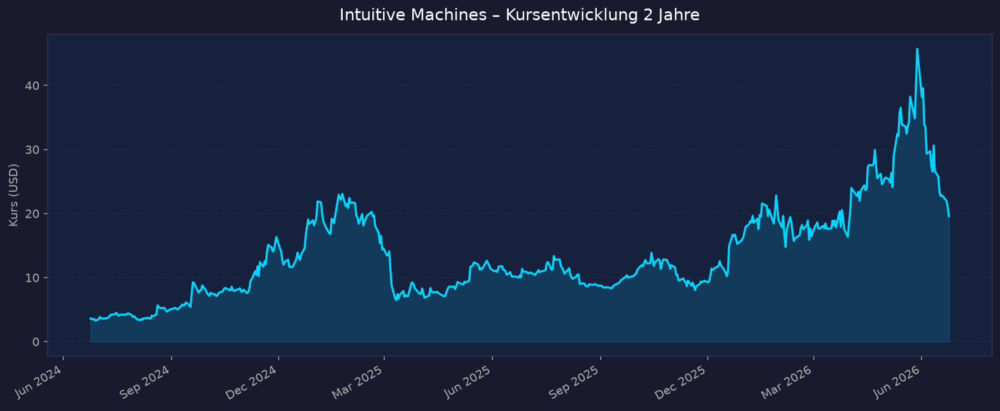
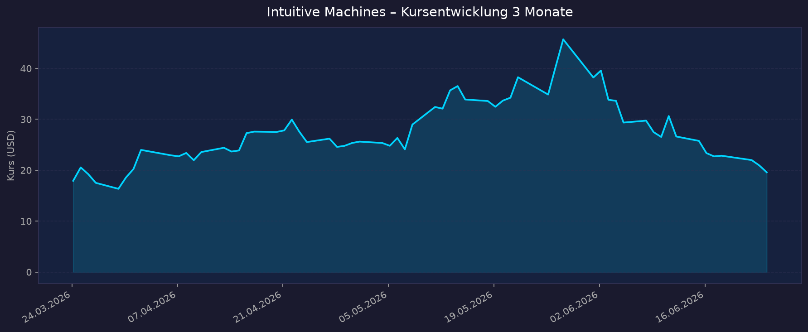

Sektor-Einordnung: Direkter Weltraum-Pure-Play — Mondlandefähren („Nova-C"), NASA-CLPS-Aufträge, Lunar Data/Relay Services. Defizitär, daher KGV = n/a — defizitär. Bewertungsfokus liegt auf P/S, Cash-Runway, Verwässerung und Auftragsbestand (NASA).
📈 1. Kursentwicklung
Aktueller Kurs: ~20,95 USD | Veränderung heute: ~ +0 % (Vortagesschluss 20,95 USD; Intraday ~19,6–22,2 USD)
Chart – 2 Jahre

Chart – 3 Monate

| Zeitraum | Kurs Start | Kurs Ende | Veränderung |
|---|---|---|---|
| 2 Jahre | ~3,61 USD | ~20,95 USD | +480 % |
| 3 Monate | ~17,92 USD | ~20,95 USD | +17 % |
| 52-Wochen-Hoch | — | 46,75 USD | — |
| 52-Wochen-Tief | — | 7,78 USD | — |
Beobachtung: Sehr volatile, junge Börsenhistorie (SPAC-Listing 2023). Der Kurs stand Mitte Mai 2026 nach den Q1-Zahlen noch bei ~36,5 USD, fiel danach aber rund 32 % in einem Monat — Hauptgründe: Rotation in die SpaceX-Aktie nach deren IPO am 12.06.2026 sowie Verwässerungssorgen wegen des neuen 500-Mio-USD-Aktienverkaufsprogramms. Aktuell etwa 55 % unter dem 52-Wochen-Hoch.
🔗 Interaktiv: TradingView NASDAQ-LUNR
💹 2. KGV-Entwicklung (Kurs-Gewinn-Verhältnis)
Aktuelles KGV: n/a — defizitär
| Zeitraum | KGV | Einordnung |
|---|---|---|
| Aktuell | n/a — defizitär | Nettoverlust, kein positiver Gewinn |
| vor 3 Monaten | n/a — defizitär | — |
| vor 12 Monaten | n/a — defizitär | — |
| Forward-KGV (yfinance) | -163 | negativ → bestätigt erwarteten Verlust je Aktie |
Bewertung: Als defizitärer Pure-Play ist das KGV nicht aussagekräftig. Das Unternehmen schrieb in jedem der letzten Quartale Nettoverluste (FY2025: –106,8 Mio USD). Bewertung erfolgt daher über P/S, Cash-Runway und Auftragsbestand (siehe Abschnitte 3, 8 und Gesamteinschätzung). Positives Adjusted EBITDA wird erstmals für das Gesamtjahr 2026 in Aussicht gestellt.
💰 3. Sales Multiple (Kurs-Umsatz-Verhältnis / P/S)
Aktuelles P/S-Verhältnis: ~9–10x (auf TTM-Umsatz 334 Mio USD und Class-A-Marktkap. ~3,1 Mrd USD)
| Zeitraum | P/S Ratio | Einordnung |
|---|---|---|
| Aktuell (TTM) | ~9,4x (yfinance) | Auf TTM-Umsatz 31.03.2026 = 334 Mio USD |
| Alternativberechnung | ~27,6x (companiesmarketcap, voll verwässert / FY-Umsatz) | je nach Aktienanzahl & Umsatzbasis |
| Ende 2025 | ~10,3x | auf FY2025-Umsatz 210 Mio USD |
| vor 24 Monaten | sehr hoch (>30x) | Umsatzbasis damals nur ~80 Mio USD |
Trend: Fallend im Verhältnis zum Umsatz — der TTM-Umsatz hat sich durch die Lanteris-Akquisition und neue CLPS-Aufträge mehr als verdoppelt (+54 % YoY), während der Kurs gleichzeitig korrigierte. Hinweis: Die Spanne 9–28x entsteht durch unterschiedliche Aktienanzahl-Basen (Class A allein ~160 Mio vs. voll verwässert inkl. Class C ~217 Mio) und Umsatzbasen. Forward-P/S auf die Guidance (900 Mio–1 Mrd USD Umsatz 2026) liegt bei nur ~3–5x — deutlich günstiger, falls die Guidance erreicht wird.
📊 4. Handelsvolumen (Trading Volume)
| Zeitraum | Ø Tagesvolumen | Auffälligkeiten |
|---|---|---|
| 3-Monats-Durchschnitt | ~15,7 Mio Aktien | hohe Liquidität für Small/Mid-Cap |
| 10-Tage-Durchschnitt | ~15,0 Mio Aktien | leicht rückläufig |
| Volumen-Peaks (2J) | deutlich erhöht | Earnings-Tage, Mondlandung IM-2 (März 2025), SpaceX-IPO-Rotation (Juni 2026) |
Volumentrend: Anhaltend hohes Handelsinteresse — typisch für eine stark von Retail-Anlegern und Momentum-Tradern gehandelte „Space-Story"-Aktie mit hoher Short-Quote. Volumen reagiert stark auf NASA-Auftragsmeldungen und Missionsereignisse.
🏦 5. Insider Trades (letzte 2 Jahre)
| Datum | Name / Entität | Funktion | Kauf/Verkauf | Anzahl Aktien | Wert (USD) |
|---|---|---|---|---|---|
| Apr 2026 | Ghaffarian Enterprises, LLC | Director / 10%-Owner | Verkauf | 102.945 + 38.964 | n. v. (10b5-1-Plan) |
| Mär 2026 | Ghaffarian Enterprises, LLC | Director / 10%-Owner | Verkauf | 283.818 (gesamt) | ~17,06–20,75 USD/Aktie |
| Feb 2026 | diverse Insider | — | Verkauf (5 Transaktionen) | n. v. | ~2,61 Mio gesamt |
3-Monats-Überblick: Überwiegend Netto-Verkäufe, jedoch ausschließlich über vorab festgelegte Rule-10b5-1-Pläne (adoptiert Dez. 2025) — also planmäßige, keine opportunistischen Verkäufe. Keine nennenswerten Insider-Käufe gemeldet. 2-Jahres-Überblick: Mitgründer/Großaktionär Kamal Ghaffarian (über LLCs) reduziert kontinuierlich Positionen, hält aber weiterhin substanzielle Beteiligung (zig Mio. Common Units / Class-C-Anteile). Kein Alarmsignal, aber auch kein Vertrauensbeweis durch Käufe.
Quelle: SEC Edgar / StockTitan / MarketBeat
🩳 6. Short-Positionen
Aktuelle Short Quote: ~13 % der ausstehenden Aktien (≈ 28 Mio Aktien short, Stand Mai 2026); auf Class-A-Float-Basis (yfinance) sogar ~26,5 %
| Zeitraum | Short Interest | Veränderung |
|---|---|---|
| Aktuell (Mai 2026) | ~13 % der Shares Out. / ~26,5 % des Class-A-Floats | rückläufig |
| Jan 2026 | ~23 % des Floats | erhöht |
Einschätzung: Hoch — LUNR gehört zu den am stärksten geshorteten Space-Aktien. Die hohe Short-Quote spiegelt Skepsis gegenüber Profitabilität, Verwässerung und Missionsrisiko wider, birgt aber zugleich Short-Squeeze-Potenzial bei positiven Katalysatoren (NASA-Aufträge, erfolgreiche IM-3-Mission). Der Rückgang von ~23 % (Jan) auf ~13 % (Mai) deutet auf abnehmenden Short-Druck nach den starken Q1-Zahlen hin.
🗞️ 7. Aktuelle Nachrichten
| Datum | Quelle | Nachricht | Relevanz |
|---|---|---|---|
| Jun 2026 | StockTitan | Verkaufsvereinbarung über bis zu 500 Mio USD Class-A-Aktienverkauf (ATM-Programm, Prospekt 02.06.) | Hoch (Verwässerung) |
| Jun 2026 | Yahoo Finance | Kursdruck durch Rotation in SpaceX-Aktie nach deren IPO (12.06.); –32 % im Monat | Hoch |
| Mai 2026 | Tickeron / StockTitan | Q1 2026: Rekordumsatz 186,7 Mio USD, erstmals positives Adj. EBITDA, Backlog ~1,1 Mrd USD | Hoch |
| Mai 2026 | Timothy Sykes | Analysten-Upgrades + neue NASA-Wins treiben Kurs | Mittel |
| 2026 | QuiverQuant | 180,4 Mio USD NASA-CLPS-Auftrag (Task Order) | Hoch |
| Q1 2026 | Investing.com | 800 Mio USD Lanteris-Akquisition abgeschlossen → „Next-Gen Space Prime" | Hoch |
| 2026 | StockTitan | 175 Mio USD strategisches Eigenkapital-Investment | Mittel |
| 2026 | Simply Wall St | Potenzieller NASA-Südpol-Vertrag als möglicher „Game Changer" | Mittel |
| Jun 2026 | S&P/MarketBeat | Analysten-Konsens „Buy", Ø-Kursziel ~40,8 USD (Range 11–75 USD) | Mittel |
Sentiment: Gemischt bis vorsichtig positiv — operativ stark (Rekordumsatz, Backlog-Sprung, erste EBITDA-Schwelle, NASA-Aufträge), aber kurzfristig belastet durch SpaceX-Rotation und das 500-Mio-Verwässerungsprogramm. Analysten bleiben mehrheitlich bullish (Ø-Ziel ~+95 % über aktuellem Kurs).
📋 8. Letzte 3 Quartalsberichte
Q1 2026 (Quartal endend 31.03.2026)
| Kennzahl | Ist | Erwartung | Abweichung |
|---|---|---|---|
| Umsatz (Revenue) | 186,7 Mio USD (≈ +199 % YoY) | ~200–205 Mio USD | verfehlt (~ –8 %) |
| EPS (Class A) | –0,25 USD | ~ –0,06 bis –0,07 USD | verfehlt (deutlich) |
| Nettoverlust | –52,5 Mio USD (–37,4 Mio dem Unternehmen zurechenbar) | — | — |
| Adj. EBITDA | +2,7 Mio USD (erstmals positiv!) | — | — |
| Cash & Äquivalente | 231,6 Mio USD | — | — |
| Backlog | ~1,1 Mrd USD (Rekord, +842 Mio ggü. Jahresende) | — | — |
Guidance: FY2026 bestätigt: Umsatz 900 Mio – 1 Mrd USD, Adj. EBITDA positiv. Kursreaktion: trotz Doppel-Miss +2,4 % am 14.05. (Schluss 36,52 USD) — Markt honorierte Rekord-Backlog und erstes positives EBITDA.
Q4 2025 (Quartal endend 31.12.2025)
| Kennzahl | Ist | Erwartung | Abweichung |
|---|---|---|---|
| Umsatz (Revenue) | 44,8 Mio USD | — | — |
| EPS | nicht separat ausgewiesen | — | — |
| Nettoverlust | –59,7 Mio USD | — | — |
| Adj. EBITDA | –19,1 Mio USD | — | — |
| Bruttomarge | 19 % (positiv) | — | — |
| Cash & Äquivalente | 582,6 Mio USD | — | — |
| Backlog (Jahresende) | 213,1 Mio USD (vor Lanteris) | — | — |
Guidance: FY2026-Ausblick (900 Mio–1 Mrd USD) erstmals kommuniziert; Ankündigung der 800-Mio-Lanteris-Übernahme zur Bildung eines „Next-Gen Space Prime". Kursreaktion: nicht eindeutig verfügbar
Q3 2025 (Quartal endend 30.09.2025)
| Kennzahl | Ist | Erwartung | Abweichung |
|---|---|---|---|
| Umsatz (Revenue) | 52,4 Mio USD (vs. 58,5 Mio Vj.) | leicht verfehlt | verfehlt |
| EPS | –0,06 USD | verfehlt | verfehlt |
| Nettoverlust | –9,96 Mio USD (–87,6 % YoY, stark verbessert) | — | übertroffen |
| Adj. EBITDA | –13,2 Mio USD | — | — |
| Operativer Verlust | –15,4 Mio USD | — | — |
| Cash & Äquivalente | 622,0 Mio USD | — | — |
Guidance: 2026er-Wachstum 15–20 % in Aussicht gestellt; Ankündigung der Lanteris-Akquisition (800 Mio USD) + 8,2-Mio-Air-Force-Vertrag (Nuklear-Power). Kursreaktion: nicht eindeutig verfügbar
Cash-Verlauf (wichtig für Runway): 622 Mio (Q3 '25) → 582,6 Mio (Q4 '25) → 231,6 Mio (Q1 '26). Der starke Rückgang spiegelt v. a. die Lanteris-Übernahme (Cash-Anteil) und laufenden Cash-Burn wider. Free Cashflow FY2025: –55,9 Mio USD. Das im Juni 2026 gestartete 500-Mio-USD-ATM-Programm dient dazu, den Runway zu sichern — auf Kosten der bestehenden Aktionäre (Verwässerung).
🌍 9. Marktkontext & Wettbewerb
Markt / Branche: Kommerzielle Mondlandefähren & Cislunar-Dienste im Rahmen von NASAs CLPS-Programm (Commercial Lunar Payload Services). Die unter CLPS vergebenen Aufträge summieren sich kumuliert auf über 2,6 Mrd USD. NASA plant ab ~2027 über drei Jahre bis zu 30 Mondlandemissionen (rund eine pro Monat) zum Aufbau einer Mondbasis — ein potenziell mehrere zehn Mrd USD schweres Beschaffungsvolumen.
| Wettbewerber | Stärke | Schwäche |
|---|---|---|
| Firefly Aerospace | Erste vollständig erfolgreiche kommerzielle Mondlandung (Blue Ghost M1, März 2025); breites Trägerraketen-Portfolio | jüngeres Mond-Programm, hoher Kapitalbedarf |
| Astrobotic | Etablierter CLPS-Anbieter, Südpol-fokussierter Griffin-Lander (Start ~Jul 2026) | Peregrine-Mission 2024 gescheitert (Treibstoffleck); nicht börsennotiert |
| ispace (Japan) | Internationaler Player, mehrere Missionen | bisherige Landungen gescheitert |
| SpaceX | Dominanz bei Trägerraketen & Starship; seit IPO (12.06.2026) ~1,75 Bio USD bewertet | kein direkter CLPS-Lander-Wettbewerb, aber bindet Anlegerkapital |
Branchentrends: (1) Übergang von rein staatlichen zu Public-Private-Hybridmissionen mit Festpreis-Verträgen; (2) Lobbying der CLPS-Firmen für „Block Buys" (Mehrjahres-Sammelaufträge) → planbarere Umsätze & Skaleneffekte; (3) 2026 als „Moon Rush"-Jahr mit mehreren konkurrierenden Landeversuchen (IM-3, Griffin-1, Blue Ghost 2). Marktposition: Intuitive Machines ist mit zwei tatsächlich durchgeführten Mondlandungen (IM-1 Feb 2024, IM-2 März 2025) der erfahrenste börsennotierte US-Pure-Play und einer der wenigen mit Flugnachweis. Durch die Lanteris-Integration entwickelt sich das Unternehmen vom reinen Lander-Anbieter zum vertikal integrierten „Space Prime" (Satelliten-Plattformen, Datenrelais, Engineering-Services). Risiken aus dem Marktumfeld: Abhängigkeit von wenigen Großkunden (v. a. NASA → politisches/Budget-Risiko), hohe Missionsrisiken (Teilfehlschläge bei IM-1/IM-2 beim „weichen" Aufsetzen), intensiver Wettbewerb, sehr kapitalintensiv → wiederkehrender Verwässerungsdruck, sowie Kapital-Rotation in SpaceX.
🧮 Bewertungs-Score
| Kriterium | Score (1–10) | Begründung |
|---|---|---|
| Bewertung | 5,5 | P/S (TTM ~9–10x) hoch, aber Forward-P/S ~3–5x auf die 900 Mio–1 Mrd-Guidance attraktiv; KGV n/a (defizitär). Cash-Runway durch Burn + ATM-Programm belastet. |
| Wachstum & Momentum | 7,5 | Umsatz +54 % TTM / +199 % YoY in Q1; Backlog-Sprung auf 1,1 Mrd USD; Kursmomentum kurzfristig negativ (SpaceX-Rotation). |
| Bilanz & Sicherheit | 4,0 | Cash auf 231 Mio gefallen, Debt 455 Mio, FCF negativ, hohe Verwässerung (500-Mio-ATM, Up-C-Struktur). Schwächster Punkt. |
| Qualität & Wettbewerbsposition | 7,0 | Einer der wenigen Pure-Plays mit echtem Flugnachweis (2 Mondlandungen); breiter NASA-Auftragsbestand; Wandel zum „Space Prime". |
| Chancen vs. Risiken | 6,0 | Starke Katalysatoren (30 NASA-Missionen ab 2027, IM-3, Südpol-Vertrag) gegen Missionsrisiko, NASA-Budgetabhängigkeit, Short-Quote, Verwässerung. |
Gewichteter Gesamtscore: (Bewertung 20 %, Wachstum 25 %, Bilanz 20 %, Qualität 20 %, Chancen/Risiken 15 %) = 5,5·0,20 + 7,5·0,25 + 4,0·0,20 + 7,0·0,20 + 6,0·0,15 = 5,9 / 10
→ Spekulativer Wachstumswert mit überdurchschnittlichem Chance-/Risiko-Profil. Operativ auf gutem Weg, aber Bilanz- und Verwässerungsrisiko drücken den Score.
5-Jahres-Szenario (Horizont 2031)
| Szenario | Annahmen | Kurs 2031 (ca.) | Gesamtrendite ggü. ~20,95 USD |
|---|---|---|---|
| Bär | Mondmissionen scheitern teilweise, NASA-Budget gekürzt, weitere starke Verwässerung, Umsatz stagniert <600 Mio | ~7–10 USD | –55 % bis –65 % |
| Base | Guidance erreicht (~1 Mrd 2026), danach moderates Wachstum, nachhaltig positives EBITDA ab 2027, Verwässerung verkraftbar | ~35–45 USD | +70 % bis +115 % |
| Bull | „Block Buys" der NASA, mehrere erfolgreiche Missionen, „Space Prime"-Skalierung, Profitabilität & Umsatz >2 Mrd, Re-Rating | ~70–90 USD | +235 % bis +330 % |
Keine Dividende (defizitär, kein Ausschüttungspotenzial im Betrachtungszeitraum). Spanne sehr breit — typisch für einen frühphasigen Space-Pure-Play; das Ergebnis hängt entscheidend von Missionserfolg, NASA-Aufträgen und Verwässerungsgrad ab.
📝 Gesamteinschätzung
Stärken:
- Erfahrenster börsennotierter US-Mond-Pure-Play mit zwei real durchgeführten Mondlandungen (IM-1, IM-2) — echter Flugnachweis statt nur Pläne.
- Rekord-Auftragsbestand ~1,1 Mrd USD (von 213 Mio Ende 2025) durch Lanteris-Übernahme und 180-Mio-NASA-CLPS-Auftrag.
- Operative Wende: Q1 2026 erstmals positives Adj. EBITDA; FY2026-Guidance 900 Mio–1 Mrd USD Umsatz.
- Strukturell wachsender Markt (NASA will ab 2027 ~30 Mondmissionen), Wandel zum vertikal integrierten „Space Prime".
- Analysten-Konsens „Buy", Ø-Kursziel ~40,8 USD (≈ +95 %).
Risiken:
- Defizitär mit hohem Cash-Burn; Cash von 622 Mio (Q3 '25) auf 231 Mio (Q1 '26) gefallen.
- Erhebliche Verwässerung: 500-Mio-USD-ATM-Programm (Juni 2026) + Up-C-Aktienstruktur (Class A vs. Class C).
- Hohe Klumpenabhängigkeit von NASA → politisches & Budget-Risiko.
- Missions-/Technologierisiko: auch IM-1/IM-2 setzten nicht vollständig nominal auf; nächster Test ist IM-3.
- Hohe Short-Quote und Kapital-Rotation in die seit Juni 2026 börsennotierte SpaceX-Aktie.
Fazit: Intuitive Machines ist der reinste und am weitesten entwickelte börsennotierte Mond-Pure-Play und profitiert direkt vom strukturellen Aufbau der NASA-Mondökonomie — sichtbar an Rekord-Backlog, Umsatzsprung und der ersten EBITDA-Schwelle. Dem stehen ein defizitäres Geschäftsmodell, sinkende Cash-Reserven und ein frisch gestartetes 500-Mio-Verwässerungsprogramm gegenüber, was den Titel klar als spekulativen, ereignisgetriebenen Wachstumswert ausweist. Auf Forward-Basis (P/S ~3–5x) ist die Bewertung bei erreichter Guidance nicht überzogen; entscheidend bleiben Missionserfolge, neue NASA-Aufträge und das Tempo des Verwässerungs- bzw. Cash-Burns. Bewertungs-Score 5,9/10.
Datenquellen: Yahoo Finance (yfinance) · Macrotrends · companiesmarketcap · StockTitan · GlobeNewswire · Investing.com · Tickeron · QuiverQuantitative · MarketBeat · stockanalysis.com · SEC Edgar · SpaceNews · NASA CLPS · Space.com · Simply Wall St Keine Anlageberatung — rein informative Auswertung öffentlicher Daten.